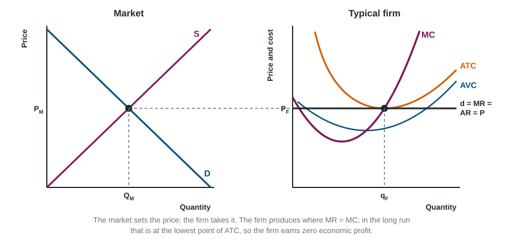

Perfect Competition
In perfect competition, many firms sell an identical product and can enter or exit freely, so each firm is a price taker: its demand curve is horizontal at the market price, d = MR = AR = P.
Part 1 · Hook
Why this matters
Part 2 · Before you start
What this builds on
Part 3 · Prerequisite check
Quick check before you start
1. A firm that sells every unit at the market price has a demand curve that is
- horizontal at the price: d = MR = AR = P
- downward sloping, with MR below it
- vertical at its output
- the same as its MC curve
Show the answer
Each unit adds the price to revenue.
- Correct: horizontal at the price: d = MR = AR = P:
- downward sloping, with MR below it:
- vertical at its output:
- the same as its MC curve:
2. In the long run, economic profit in a market leads to
- entry, which shifts market supply right
- exit, which shifts market supply left
- a shift of market demand
- higher fixed costs
Show the answer
Profit draws new firms in.
- Correct: entry, which shifts market supply right:
- exit, which shifts market supply left:
- a shift of market demand:
- higher fixed costs:
3. Deadweight loss is zero when
- the market produces the quantity that maximizes total surplus
- the price is above equilibrium
- there is a shortage
- the government sets a price floor
Show the answer
Total surplus is largest at the efficient quantity.
- Correct: the market produces the quantity that maximizes total surplus:
- the price is above equilibrium:
- there is a shortage:
- the government sets a price floor:
Part 4 · See it
See it first

Part 5 · Step by step
How it works, step by step
- Market demand risesthe market price rises and each firm earns an economic profit at its new MR = MC output
- Economic profit is positive and entry is freenew firms enter the market
- New firms entermarket supply shifts right and the market price falls
- The price falls to the lowest point of ATCeconomic profit is zero, entry stops and the market is back in long-run equilibrium with more firms
Part 6 · Key ideas
Key ideas
- Perfect competition: many buyers and sellers, identical products, known prices, free entry and exit. Each firm is a price taker.
- Draw market and firm side by side: the market price carried across is the firm's horizontal d = MR = AR = P; the firm produces q where MR = MC.
- Long-run equilibrium: entry and exit push P to minimum ATC, so economic profit is zero and P = MC = minimum ATC.
- That outcome is allocatively efficient (P = MC) and productively efficient (lowest ATC). In a constant-cost industry long-run supply is horizontal.
Part 7 · Misconception
A common mistake
The wrong idea: A perfectly competitive firm faces the same downward-sloping demand curve as the market.
What actually happens: The market demand curve slopes down, but each firm is so small that it can sell all it wants at the market price: its own demand curve is horizontal, d = MR = AR = P.
Part 8 · Check yourself
Check yourself
Exam-style questions. Anything you miss goes into your review queue.
Graph
A perfectly competitive market and a typical firm in the short run
1. In the graphs, what is the typical firm earning in the short run?
- Zero economic profit: the firm is at the lowest point of ATC
- An economic loss: MC is above ATC
- An economic profit: price is above ATC at its output
- A loss, but it keeps producing: price is above AVC
Show the answer
Find q where d = MR = AR = P meets MC, then compare the price with ATC there: P > ATC, so the firm earns an economic profit.
- Zero economic profit: the firm is at the lowest point of ATC: The firm produces where MR = MC, to the right of the lowest point of ATC, and the price is above ATC there.
- An economic loss: MC is above ATC: Comparing MC with ATC says whether ATC is rising; profit compares price with ATC.
- Correct: An economic profit: price is above ATC at its output: Right: the price line is above ATC where MR = MC.
- A loss, but it keeps producing: price is above AVC: The price is above ATC too, so the firm earns a profit.
2. In the graphs, what happens in this market in the long run?
- Firms enter, market supply shifts right and the price falls
- Firms exit, market supply shifts left and the price rises
- Market demand shifts left as buyers react to the high price
- Nothing changes, because the firm maximizes profit already
Show the answer
Economic profit draws new firms in. Entry shifts market supply right, the price falls, and the process stops when the price reaches the lowest point of ATC.
- Correct: Firms enter, market supply shifts right and the price falls: Right: profit draws firms in until it is gone.
- Firms exit, market supply shifts left and the price rises: Exit follows losses; these firms earn a profit.
- Market demand shifts left as buyers react to the high price: Buyers move along demand; it is entry that changes the market.
- Nothing changes, because the firm maximizes profit already: Profit maximization sets the firm's output, but the profit draws in new firms.
3. In the graphs, the industry is constant-cost. Compared with the short run shown, at the new long-run equilibrium
- the price is higher and the market sells less
- the price is lower and the market sells less
- the price is the same and each firm sells more
- the price is lower and the market sells more
Show the answer
Entry shifts market supply right: the price falls back to the lowest point of ATC (zero economic profit) and the market quantity rises. Each firm makes less than in the short run, but there are more firms.
- the price is higher and the market sells less: Entry shifts supply right, which lowers the price and raises the quantity.
- the price is lower and the market sells less: A rightward supply shift raises the market quantity.
- the price is the same and each firm sells more: The price falls as firms enter, and each firm produces less, at the lowest point of ATC.
- Correct: the price is lower and the market sells more: Right: entry adds supply, so price falls to the lowest point of ATC and market output rises.
4. Label the axes, the curves and the firm's demand line on side-by-side graphs of a perfectly competitive market and a typical firm.
Work on the graph (it needs JavaScript), then check.
Show the answer
Market (left): Price and Quantity, D and S. Firm (right): Price and cost and Quantity, MC, ATC and AVC, and the horizontal d = MR = AR = P line at the market price carried across.
- Key: see the explanation
5. The market is in long-run equilibrium. Mark the typical firm's output.
Work on the graph (it needs JavaScript), then check.
Show the answer
In long-run equilibrium P = MR = MC = the lowest point of ATC, so the firm produces where MC crosses ATC at its lowest point and earns zero economic profit.
- Key: see the explanation
6. In long-run equilibrium, a perfectly competitive market is
- allocatively but not productively efficient
- productively but not allocatively efficient
- both allocatively and productively efficient
- neither, because firms earn no economic profit
Show the answer
Allocative efficiency: P = MC, so the value buyers put on the last unit equals its cost. Productive efficiency: output is made at the lowest point of ATC. Both hold in long-run equilibrium.
- allocatively but not productively efficient: The price is also at the lowest point of ATC, so it is productively efficient too.
- productively but not allocatively efficient: P = MC also holds, so it is allocatively efficient too.
- Correct: both allocatively and productively efficient: Right: both efficiency conditions hold.
- neither, because firms earn no economic profit: Zero economic profit is a normal profit and fits both kinds of efficiency.
7. Make the long-run explanation specific: firms in a perfectly competitive market are earning economic profit. Fill in each blank.
Build the answer part by part, then write it in your own words.
Show the answer
Profit, entry, a rightward shift of market supply, a lower price, and zero economic profit at the lowest point of ATC: every link of the long-run chain.
- An answer that earns the point: Economic profit draws new firms in because resources earn more here than elsewhere, so market supply shifts right and the market price falls until it equals the lowest point of ATC, where economic profit is zero.
Part 9 · Summary
Summary
Part 10 · Up next
What comes next
Part 11 · Connections